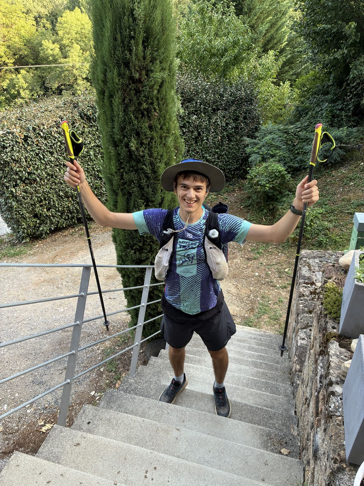

Mes courses, mes défis et mes retours d’expérience en trail.

Relier à pied deux endroits que j’ai reliés plus de 500 fois en voiture : Montpellier, où j’ai fait mes études, et La Canourgue, où j’ai grandi. 204 km en 4 jours.